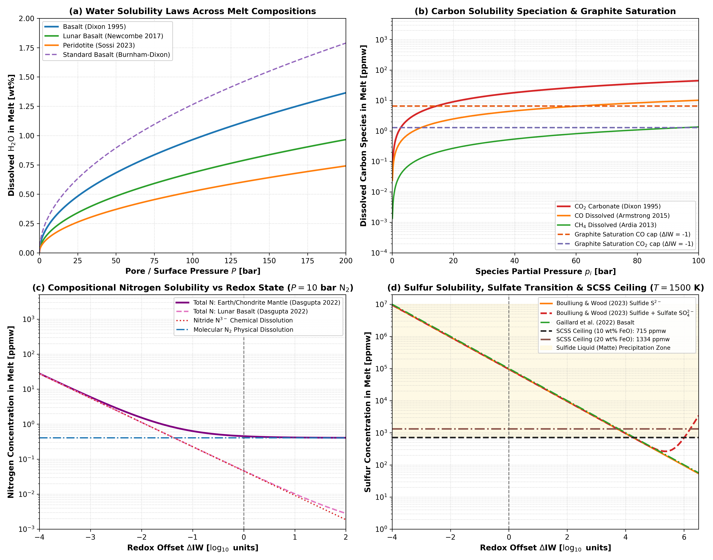
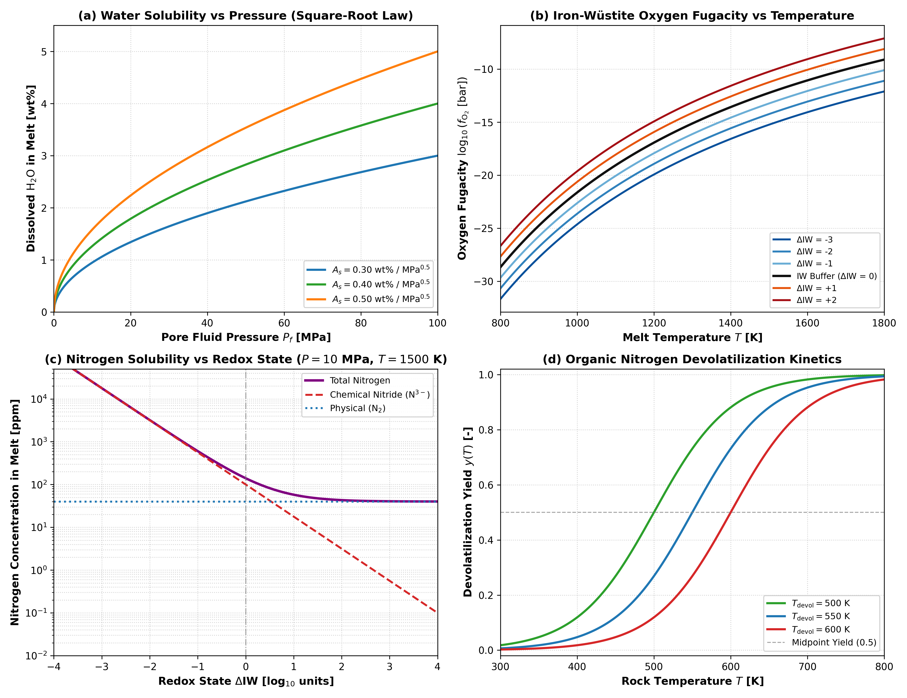

Multi-Species H-C-N-S Volatile Solubility, Speciation, and Saturation Ceilings
This module describes multi-component H-C-N-S volatile solubility laws, gas-phase chemical speciation, graphite saturation constraints, sulfur content at sulfide saturation (SCSS), and organic nitrogen devolatilization kinetics in Erebus.jl.
1. Physical Motivation
Early planetesimals accreted heterogeneous mixtures of hydrous silicates, iron sulfides, refractory carbonaceous matter, and trapped nebular gases. During core-mantle differentiation and internal radiogenic heating, silicate partial melting and magma ocean evolution partition volatile elements between the crystalline matrix, liquid silicate melt, immiscible metallic liquids, and exsolved gas phases:
- Hydrogen ($\text{H}_2\text{O}$ and $\text{H}_2$): Dissolves as hydroxyl ($\text{OH}^-$) and molecular $\text{H}_2\text{O}$ in silicate melts across basaltic, peridotitic, and lunar compositions. Under strongly reducing conditions, dissolved $\text{H}_2$ dominates hydrogen outgassing.
- Carbon ($\text{CO}$, $\text{CH}_4$, and $\text{CO}_2$): Dissolves as neutral $\text{CO}$ and $\text{CH}_4$ in reduced silicate melts ($\Delta\text{IW} \le 0$). Under oxidized conditions ($\Delta\text{IW} > 0$), carbon dissolves predominantly as carbonate ($\text{CO}_3^{2-}$). Carbon fugacities are physically bounded by graphite saturation ($a_{\text{C}} = 1$), above which elemental graphite precipitates.
- Nitrogen ($\text{N}_2$, Nitride $\text{N}^{3-}$, and Organics): Dissolves physically as molecular $\text{N}_2$ in oxidizing environments. Under reducing conditions ($\Delta\text{IW} \le -1$), chemical dissolution as nitride ($\text{N}^{3-}$) dominates. Refractory macromolecular organic nitrogen thermally decomposes during metamorphic heating ($400\text{ to }700\text{ K}$), releasing nitrogenous fluids into the porous matrix.
- Sulfur ($\text{S}^{2-}$ and $\text{SO}_4^{2-}$): Dissolves as sulfide ($\text{S}^{2-}$) under reducing conditions and transitions to sulfate ($\text{SO}_4^{2-}$) above $\Delta\text{IW} \approx +1.5$. Dissolved sulfur content is physically capped by the sulfur content at sulfide saturation (SCSS). When sulfur exceeds SCSS, excess sulfur exsolves into an immiscible Fe-S sulfide liquid (matte) rather than remaining dissolved in the silicate melt.
2. Mathematical Formulation
Water and Molecular Hydrogen Solubility
Water solubility in silicate melt is parameterized through four compositional laws:
Burnham & Dixon Baseline Basalt (Burnham 1979; Dixon et al. 1995): $w_{\text{melt}}^{\text{H}_2\text{O}} = A_s \sqrt{\max(0, P_f \times 10^{-6})} \quad [\text{wt}\%]$ where $A_s = 0.40\text{ wt}\%/\text{MPa}^{0.5}$ is a representative baseline coefficient for basaltic melts.
Sossi et al. (2023) Peridotite Melt: $w_{\text{melt}}^{\text{H}_2\text{O}} = \left(524.0 \sqrt{P_f \times 10^{-5}}\right) \times 10^{-4} \quad [\text{wt}\%]$
Dixon et al. (1995) MORB Basalt: $w_{\text{melt}}^{\text{H}_2\text{O}} = \left(965.0 \sqrt{P_f \times 10^{-5}}\right) \times 10^{-4} \quad [\text{wt}\%]$
Newcombe et al. (2017) Lunar Basalt: $w_{\text{melt}}^{\text{H}_2\text{O}} = \left(683.0 \sqrt{P_f \times 10^{-5}}\right) \times 10^{-4} \quad [\text{wt}\%]$
Molecular hydrogen dissolves under reducing conditions following Henry law calibrations (Hirschmann et al. 2012; Gaillard et al. 2003):
\[\log_{10}(X_{\text{H}_2} [\text{ppmw}]) = 1.1008 + 0.5241 \log_{10}(P_{\text{H}_2} [\text{bar}])\]
Iron-Wüstite Oxygen Fugacity Buffer
The 1-bar oxygen fugacity is evaluated relative to the iron-wüstite (IW) buffer using the empirical parameterization of O'Neill (1988) and Campbell et al. (2009):
\[\log_{10}(f_{\text{O}_2} [\text{bar}]) = 6.541 - \frac{28164}{T} + \Delta\text{IW}\]
where $T$ is temperature in Kelvin and $\Delta\text{IW}$ is the redox offset in $\log_{10}$ units.
Carbon Solubility Speciation and Graphite Saturation
Dissolved carbon partitions into carbon monoxide ($\text{CO}$), methane ($\text{CH}_4$), and carbonate ($\text{CO}_3^{2-}$):
Carbon monoxide (Armstrong et al. 2015): $\log_{10}(X_{\text{CO}} [\text{ppmw}]) = -0.738 + 0.876 \log_{10}(p_{\text{CO}} [\text{bar}]) - 5.44 \times 10^{-5} P_{\text{tot}} [\text{bar}]$
Methane (Ardia et al. 2013): $X_{\text{CH}_4} [\text{ppmw}] = p_{\text{CH}_4} [\text{GPa}] \exp\left(4.93 - 1.93 P_{\text{tot}} [\text{GPa}]\right)$
Carbon dioxide and carbonate (Dixon et al. 1995): $x_{\text{CO}_2} = 3.8 \times 10^{-7} p_{\text{CO}_2} [\text{bar}] \exp\left[-\frac{23.0 (p_{\text{CO}_2} - 1)}{83.15 T}\right]$ $X_{\text{CO}_2} [\text{ppmw}] = 10^4 \times \frac{4400.0 x_{\text{CO}_2}}{36.6 - 44.0 x_{\text{CO}_2}}$
At graphite saturation ($a_{\text{C}} = 1$), maximum carbon monoxide and dioxide fugacities are governed by the heterogeneous buffer equilibria of French (1966) and Holloway et al. (1992):
\[\log_{10}(f_{\text{CO}}^{\text{max}} [\text{bar}]) = \frac{5785.0}{T} + 4.545 + 0.5 \log_{10}(f_{\text{O}_2})\]
\[\log_{10}(f_{\text{CO}_2}^{\text{max}} [\text{bar}]) = \frac{20590.0}{T} - 0.043 + \log_{10}(f_{\text{O}_2})\]
Multi-Species Nitrogen Solubility Partitioning
Erebus.jl provides two nitrogen solubility models:
1. Isothermal Redox-Partitioning Model (Libourel et al. 2003; Boulliung et al. 2020)
At reference magmatic temperature ($T \approx 1673\text{ K}$), nitrogen dissolves via physical molecular dissolution and chemical nitride dissolution:
Physical Molecular Dissolution ($\text{N}_2$): $w_{\text{phys}}^{\text{N}} = K_h \cdot f_{\text{N}_2} \quad [\text{ppm}]$
Chemical Nitride Dissolution ($\text{N}^{3-}$): $w_{\text{chem}}^{\text{N}} = (C_{\text{nitride}} \times 10^4) \sqrt{f_{\text{N}_2}} \cdot \left(\frac{f_{\text{O}_2}}{f_{\text{O}_2}^{\text{IW}}}\right)^{-3/4} \quad [\text{ppm}]$
Total Nitrogen Melt Capacity: $w_{\text{total}}^{\text{N}} = w_{\text{phys}}^{\text{N}} + w_{\text{chem}}^{\text{N}} \quad [\text{ppm}]$
Baseline values are $K_h = 0.40\text{ ppm/bar}$ and $C_{\text{nitride}} = 1.0\times 10^{-3}\text{ wt}\%/\text{bar}^{0.5}$.
2. Composition-Dependent Model (Dasgupta et al. 2022)
Incorporates temperature, pressure, redox state, and network-forming cation fractions ($\text{SiO}_2$, $\text{Al}_2\text{O}_3$, $\text{TiO}_2$):
\[w_{\text{phys}}^{\text{N}} [\text{ppmw}] = p_{\text{N}_2} [\text{GPa}] \exp\left(4.67 + 7.11 x_{\text{SiO}_2} - 13.06 x_{\text{Al}_2\text{O}_3} - 120.67 x_{\text{TiO}_2}\right)\]
\[w_{\text{chem}}^{\text{N}} [\text{ppmw}] = \sqrt{p_{\text{N}_2} [\text{GPa}]} \exp\left[\frac{5908.0 \sqrt{P_{\text{tot}} [\text{GPa}]}}{T} - 1.6 \Delta\text{IW}\right]\]
\[w_{\text{total}}^{\text{N}} = w_{\text{phys}}^{\text{N}} + w_{\text{chem}}^{\text{N}}\]
Organic Nitrogen Devolatilization Kinetics
Thermal breakdown of refractory organic matter releases volatile nitrogen via a continuous logistic transition:
\[y(T) = \frac{1}{1 + \exp\left[-\frac{T - T_{\text{devol}}}{\Delta T}\right]}\]
where $T_{\text{devol}} = 550.0\text{ K}$ is the midpoint temperature and $\Delta T = 50.0\text{ K}$ is the transition thermal width.
Sulfur Solubility and Sulfide Saturation Ceiling (SCSS)
Dissolved sulfur in silicate melt is governed by sulfide capacity under reducing conditions and sulfate capacity under oxidizing conditions (Boulliung & Wood 2022, 2023):
\[\log_{10}(C_{\text{S}^{2-}}) = 0.225 - \frac{\mathcal{S}_{\text{melt}}}{T}\]
\[S_{\text{sulfide}} [\text{wt}\%] = C_{\text{S}^{2-}} \sqrt{\frac{p_{\text{S}_2} [\text{bar}]}{f_{\text{O}_2} [\text{bar}]}}\]
When dissolved sulfur reaches the Sulfur Content at Sulfide Saturation (O'Neill & Mavrogenes 2002; Smythe et al. 2017), an immiscible Fe-S sulfide melt (matte) precipitates:
\[\ln(\text{SCSS} [\text{ppmw}]) = 7.50 - \frac{4500.0}{T} + 0.90 \ln(\max(0.1, x_{\text{FeO}})) - 2.5 \times 10^{-4} \frac{P_{\text{tot}} [\text{bar}]}{T}\]
When scss_active = true, the routine caps dissolved sulfur at the saturation ceiling:
\[S_{\text{melt}} = \min(S_{\text{solubility}}, \text{SCSS})\]
3. Literature Anchors
- French, B. M. (1966). Some geological implications of equilibrium between graphite and a C-H-O gas phase at high temperatures and pressures. Reviews of Geophysics, 4(2), 223-253. https://doi.org/10.1029/RG004i002p00223
- Burnham, C. W. (1979). The importance of volatile constituents. In The Evolution of the Igneous Rocks: Fiftieth Anniversary Perspectives, Princeton University Press, 439-482.
- O'Neill, H. S. C. (1988). Systems Fe-O and Cu-O: thermodynamic data for the equilibria Fe-"FeO", Fe-Fe3O4, "FeO"-Fe3O4, Fe-SiO2-Fe2SiO4, and Cu-Cu2O. American Mineralogist, 73(5-6), 470-486.
- Holloway, J. R., Pan, V., & Gudmundsson, G. (1992). High-pressure fluid-absent melting experiments in the presence of graphite: oxygen fugacity, ferric/ferrous ratio and dissolved CO₂. European Journal of Mineralogy, 4(1), 105-114. https://doi.org/10.1127/ejm/4/1/0105
- Dixon, J. E., Stolper, E. M., & Holloway, J. R. (1995). An experimental study of water and carbon dioxide solubilities in mid-ocean ridge basaltic liquids. Part I: Calibration and solubility models. Journal of Petrology, 36(6), 1607-1631. https://doi.org/10.1093/oxfordjournals.petrology.a037267
- O'Neill, H. S. C., & Mavrogenes, J. A. (2002). The sulfide capacity and the sulfur content at sulfide saturation of silicate melts at 1400 C and 1 bar. Journal of Petrology, 43(6), 1049-1087. https://doi.org/10.1093/petrology/43.6.1049
- Gaillard, F., Schmidt, B. C., Mackwell, S., & McCammon, C. (2003). Rate of hydrogen-iron redox exchange in silicate melts and glasses. Geochimica et Cosmochimica Acta, 67(13), 2427-2441. https://doi.org/10.1016/S0016-7037(02)01407-2
- Libourel, G., Marty, B., & Humbert, F. (2003). Nitrogen solubility in basaltic melt. Part I. Effect of oxygen fugacity. Geochimica et Cosmochimica Acta, 67(21), 4123-4135. https://doi.org/10.1016/S0016-7037(03)00259-X
- Campbell, A. J., Danielson, L., Righter, K., Seagle, C. T., Wang, Y., & Prakapenka, V. B. (2009). High pressure effects on the iron-wüstite and cobalt-palladium oxygen buffers. Earth and Planetary Science Letters, 286(3-4), 556-564. https://doi.org/10.1016/j.epsl.2009.07.022
- Hirschmann, M. M., Withers, A. C., Ardia, P., & Foley, N. T. (2012). Solubility of molecular H2 in silicate melts to 3 GPa with implications for degassed volatiles and early planetary atmospheres. Earth and Planetary Science Letters, 345, 38-48. https://doi.org/10.1016/j.epsl.2012.06.031
- Ardia, P., Hirschmann, M. M., Withers, A. C., & Stanley, B. D. (2013). Solubility of CH4 in a synthetic basaltic melt, with applications to atmosphere-magma ocean interactions. Geochimica et Cosmochimica Acta, 114, 52-71. https://doi.org/10.1016/j.gca.2013.03.028
- Armstrong, L. S., Hirschmann, M. M., Withers, A. C., & Eiler, J. M. (2015). Solubility of carbon monoxide in a synthetic basaltic melt: Constraints on early planetary degassing. Geochimica et Cosmochimica Acta, 171, 283-302. https://doi.org/10.1016/j.gca.2015.09.006
- Newcombe, M. E., Brett, A., Beckett, J. R., Baker, M. B., Newman, S., Guan, Y., & Eiler, J. M. (2017). Solubility of water in lunar basalt. Geochimica et Cosmochimica Acta, 200, 330-352. https://doi.org/10.1016/j.gca.2016.12.008
- Smythe, D. J., Wood, B. J., & Kiseeva, E. S. (2017). The sulfur content of silicate melts at sulfide saturation: New experiments and a model incorporating the effects of melt composition. American Mineralogist, 102(4), 795-803. https://doi.org/10.2138/am-2017-5931
- Boulliung, J., Dalou, C., Tissandier, L., & Villemant, B. (2020). Nitrogen solubility in silicate melts at high pressure: Effect of melt composition and oxygen fugacity. Geochimica et Cosmochimica Acta, 284, 120-140. https://doi.org/10.1016/j.gca.2020.06.017
- Boulliung, J., & Wood, B. J. (2022). The sulfur capacity of silicate melts: A new model for sulfide and sulfate solubility. Geochimica et Cosmochimica Acta, 336, 150-164. https://doi.org/10.1016/j.gca.2022.09.009
- Dasgupta, R., Ding, S., & Erdman, M. E. (2022). Nitrogen solubility in silicate melts and the volatile budget of terrestrial planets. Geochimica et Cosmochimica Acta, 324, 280-299. https://doi.org/10.1016/j.gca.2022.03.010
- Sossi, P. A., Tollan, P. M. E., O'Neill, H. S. C., & Boulliung, J. (2023). Water solubility in peridotite liquid. Earth and Planetary Science Letters, 601, 117894. https://doi.org/10.1016/j.epsl.2022.117894
4. Parameterization Behavior
Figures 1 and 2 illustrate the operational behavior of the volatile solubility parameterizations, speciation, and saturation limits:

Figure 1: Four-panel diagnostic demonstration of the multi-species H-C-N-S volatile solubility parameterizations in Erebus.jl. (a) Dissolved water concentration in silicate melt as a function of pore/surface pressure $P \in [0, 200]\text{ bar}$ across four compositional calibrations: MORB basalt (Dixon et al. 1995), lunar basalt (Newcombe et al. 2017), peridotite (Sossi et al. 2023), and the baseline Burnham-Dixon parameterization. (b) Carbon solubility speciation as a function of species partial pressure up to $100\text{ bar}$ at $T = 1500\text{ K}$, contrasting carbonate dissolution (CO₂), dissolved carbon monoxide (CO), and methane (CH₄). Dotted horizontal lines show the graphite saturation ceiling at $\Delta\text{IW} = -1$. (c) Composition-dependent nitrogen solubility as a function of redox offset $\Delta\text{IW} \in [-4, +2]$ at $p_{\text{N}_2} = 10\text{ bar}$ and $T = 1600\text{ K}$ (Dasgupta et al. 2022), decomposing total dissolved nitrogen into physical molecular (N₂) and chemical nitride (N³⁻) dissolution for Earth mantle and lunar basalt compositions. (d) Sulfur solubility as a function of redox state at $T = 1500\text{ K}$ and $p_{\text{S}_2} = 1\text{ bar}$, showing sulfide and sulfate capacities (Boulliung & Wood 2023) and the sulfur content at sulfide saturation (SCSS) ceiling for $10\text{ wt}\%$ and $20\text{ wt}\%$ FeO (Smythe et al. 2017). The yellow shaded region indicates where raw sulfide solubility exceeds SCSS, causing precipitation of an immiscible Fe-S sulfide liquid (matte).

Figure 2: Four-panel illustration of baseline volatile solubility and organic devolatilization parameterizations in Erebus.jl. (a) Dissolved water concentration in silicate melt as a function of pore fluid pressure for coefficients $A_s \in \{0.30, 0.40, 0.50\}\text{ wt}\%/\text{MPa}^{0.5}$, with square-root scaling up to $100\text{ MPa}$. (b) Oxygen fugacity $\log_{10}(f_{\text{O}_2}\ [\text{bar}])$ along the iron-wüstite buffer from $800\text{ to }1800\text{ K}$ for redox offsets $\Delta\text{IW} \in \{-3, -2, -1, 0, +1, +2\}$. (c) Nitrogen melt solubility partitioning at $P = 10\text{ MPa}$ ($100\text{ bar}$) across redox offsets $\Delta\text{IW} \in [-4, +4]$, showing the transition from chemical nitride ($\text{N}^{3-}$) dominance under reducing conditions to physical molecular ($\text{N}_2$) dominance under oxidizing conditions (Libourel et al. 2003; Boulliung et al. 2020). (d) Primordial organic nitrogen devolatilization yield $y(T)$ as a function of rock temperature for midpoint values $T_{\text{devol}} \in \{500, 550, 600\}\text{ K}$ with width $\Delta T = 50\text{ K}$.
5. Mathematical Invariants and Implementation Checks
- Zero Pressure Limit: At $P_f \le 0$, water, carbon, and nitrogen melt solubilities vanish identically ($w_{\text{sat}} = 0$).
- Burnham Scaling Invariant: Quadrupling pore pressure exactly doubles dissolved water concentration ($w(4P) / w(P) = 2.0$).
- Redox Scaling Invariant: Under reducing conditions, a decrease of $2.0$ units in $\Delta\text{IW}$ amplifies chemical nitride solubility by exactly $10^{2.0 \times 0.75} = 10^{1.5} \approx 31.6228$.
- Oxidized Physical Dominance: At $\Delta\text{IW} = +4.0$, molecular physical dissolution ($40\text{ ppm}$ at $100\text{ bar}$) exceeds chemical nitride dissolution ($0.1\text{ ppm}$) by more than two orders of magnitude.
- Organic Midpoint Symmetry: At $T = T_{\text{devol}}$, the organic devolatilization yield equals $0.5$ exactly, approaching $0$ for $T \ll T_{\text{devol}}$ and $1$ for $T \gg T_{\text{devol}}$.
- Graphite and Sulfide Saturation Ceilings: Evaluated carbon monoxide and dioxide fugacities never exceed graphite saturation limits ($a_{\text{C}} \le 1$). When
scss_active = true, dissolved sulfur never exceeds the SCSS boundary. - Domain Guards: Non-positive temperatures, non-finite pressures, non-positive solubility coefficients, and non-physical devolatilization temperatures throw explicit
DomainErrorexceptions.
6. Verification Test Suite
test/test_volatile_solubility.jl:@testset "Multi-Species Volatile Solubility & Nitrogen Chemistry"@testset "compute_iron_wustite_fO2 Invariants"@testset "compute_water_solubility_melt Invariants & Asymptotics"@testset "compute_nitrogen_solubility_melt Redox Scaling & Partitioning"@testset "compute_organic_nitrogen_yield Invariants"@testset "VolatilesConfig Schema & Bounds Validation"
test/test_volatile_solubility_hcns.jl:@testset "HCNS Volatile Solubility, Speciation, and Saturation Ceilings"@testset "Extended Water Solubility Laws"@testset "Molecular H2 Solubility Laws"@testset "Dasgupta et al. (2022) Compositional Nitrogen Solubility"@testset "Carbon Species Solubility Laws (CO, CH4, CO2)"@testset "Graphite Saturation Ceiling (French 1966 / Holloway 1992)"@testset "Sulfur Solubility Laws (Boulliung & Wood 2023, Gaillard 2022)"@testset "SCSS Ceilings (Smythe et al. 2017 / O'Neill & Mavrogenes 2002)"@testset "Gas Speciation Solver (solve_chnos_speciation)"